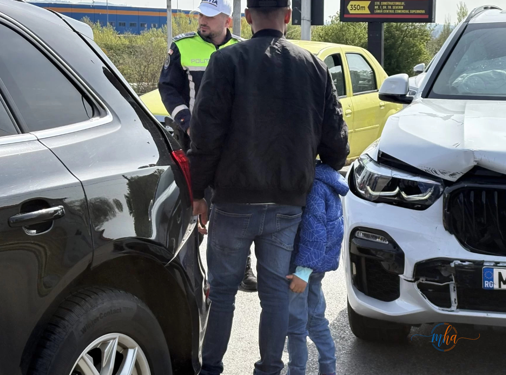
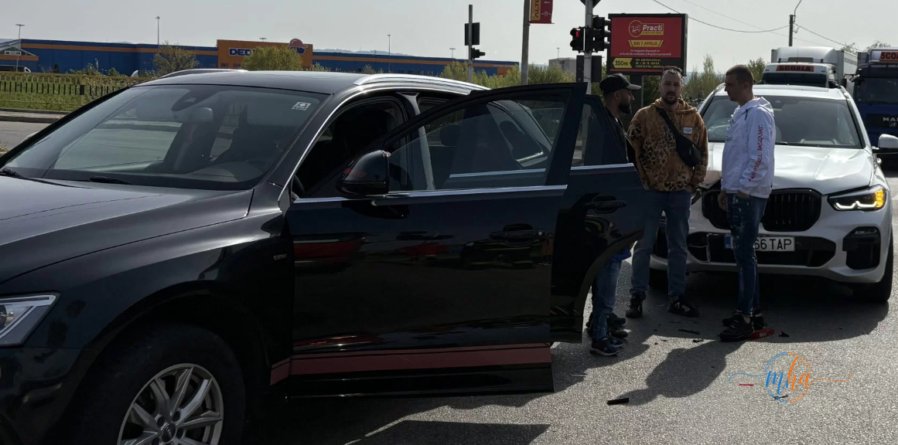

Un accident în lanț s-a produs miercuri pe Bulevardul Mihai Viteazu din Drobeta-Turnu Severin, unul dintre principalele axe rutiere ale orașului. În total, 7 persoane au fost implicate în impact, printre care și un copil, care a suferit răni.
Celelalte persoane implicate au scăpat, din fericire, fără răni grave, situația putând fi considerată mai puțin gravă decât ar fi putut să fie, având în vedere numărul mare de participanți la trafic afectați.

Polițist rutier la fața locului — copilul rănit, Bulevardul Mihai Viteazu, Drobeta-Turnu Severin
🚗 Cauza accidentului: nepăstrarea distanței de siguranță
Din primele informații, accidentul s-ar fi produs din cauza nepăstrării distanței de siguranță între autoturisme, ceea ce a dus la un impact în lanț între mai multe mașini aflate în trafic.
Accidentele în lanț produse prin nerespectarea distanței de siguranță sunt frecvente în zonele cu trafic intens și semafoare. Un singur șofer neatent poate antrena în coliziune mai multe autovehicule.

Mașinile implicate în accident — Bulevardul Mihai Viteazu, în dreptul centrului comercial Supernova
🚑 Intervenția autorităților și ancheta în curs
La fața locului au intervenit echipaje medicale și autoritățile pentru acordarea primului ajutor persoanelor implicate și fluidizarea traficului, care a fost perturbat în zonă.
Polițiștii continuă cercetările pentru a stabili toate împrejurările în care s-a produs accidentul și pentru a determina responsabilitățile.
Vom reveni cu informații actualizate pe măsură ce ancheta avansează.
Redactia MehedintiAzi.ro